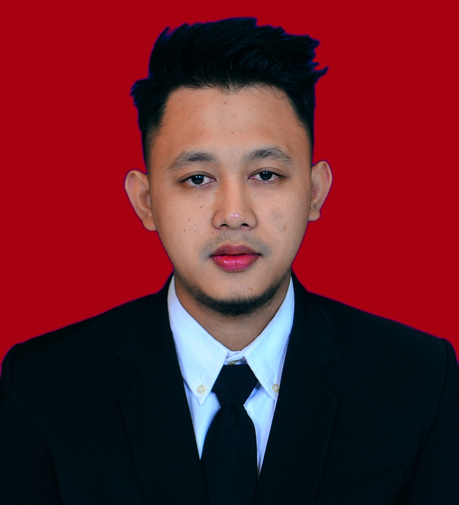

I am an experienced Engineer User of software Solidwork,
Ansys, AutoCAD, Matlab, Origin and Etc and seeking
employment with a fast-growing startup. I bring more than
Five years experience In Design, Simulation, motion study,
Finite Element, CFD, Flow simulation and more than Six years
experience in the technology industry Manufacturing
Particulary in Material Engineering.
1. PT Achidatama Karanganyar
2.MSM Solo
3.Daya Perkasa Wonogiri (Electrical Vehicle Karoseri)
Education
1. Bachelor Mechanical Engineering (Machinary Precossing)
2.Master Mechanical Engineering (Material & Metalurgy
Supported Renuable Energy)
Skills
Solidwork
CNC
Ansys
Master CAM
Matlab
Origin
Arduino
AutoCAD
Inventor
Ms Office
Ms Excel
Interests
CONTRUCTION MECHANICAL ENGINEERING